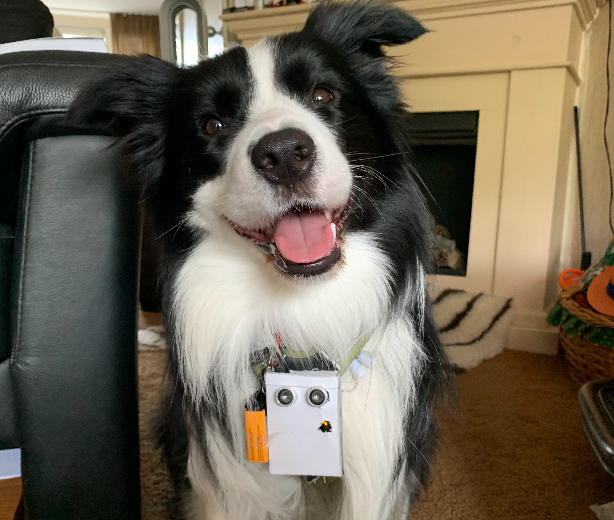

Mijn naam is Michelle Ilana Smit en ik ben een
Over mij
Mijn naam is Michelle Smit en ik ben een fantasierijk en nauwkeurig persoon op het gebied van mijn werk. Ik ben een CMDer en ik ontwerp zowel websites als apps. Ik kan goed overweg met codeer talen als HTML & CSS met JavaScript heb ik vaak nog wat hulp nodig. Ik kan in mijn toekomstige baan een aanwinst zijn omdat ik niet opgeef voor een project tot een mooi en bruikbaar eindontwerp is gebracht. Ik ben dan ook opzoek naar een bedrijf waar niet te veel mensen werken zodat de contacten tussen je collega’s wat hechter zijn. Ik hoop dan ook wanneer je iets niet begrijpt dat je dit gewoon kan vragen en dat ik misschien zelf een collega kan helpen. Ik hoop dat ik tijdens mijn werk gevarieerde projecten en taken mag uitvoeren.
Bekijk mijn LinkedinMijn diensten
App & Web Design
Ik ontwerp app en Web designs vanaf de eerste stap tot een definitief ontwerp opgeleverd is. Dit ontwerp bevat dus wireframes, doelgroep analyse en het defintieve ontwerp.
SEO
Zo bevat dit onderzoek ook een onderzoek hoe goed de website te vinden is in de browser en een verbetering hiervan.
Advertising
Naast online ontwerpen maak ik ook Campagnes. Dit bevat een onderzoek naar de doelgroep en het ontwerpen van een effectieve campagne.
Mijn projecten
Js-Space-X
Dit project was bedoelt om JS beter onder de knie te krijgen. Er moest een website gemaakt worden waar een goede landings plaats wordt bepaald voor de SpaceX. Deze landingsplaats moest afgelegen zijn en de temperatuur, windsnelheid en temperatuur moeten inzichtelijke zijn voor de landing. Dit moest dan ook voldoen aan een API en MapBox.
BekijkFACE
Het project van FACE gaat vooral over Generatie Z en hun koop behoefte. Het bedrijf had dan ook het gevoel dat de connectie met Generatie Z volledig ontbreekt. Zo moest ik samen met mijn project groep onderzoeken hoe deze connectie wel goed tot stand kan komen.
BekijkHaga website
Dit project is een Fictief concept en is dan ook niet verder gekomen dan het papieren ontwerp. Het project was vooral gebaseerd op oudere bezoekers van de website. De belangrijkste eis was hierbij de gebruiksvriendelijkheid En de doktor gevonden kan worden via de klachten.
BekijkRecover E Ball
In dit project hebben wij een ontwerp gemaakt om patienten van de Oncologie afdeling te motiveren na hun operatie meer te gaan bewegen en hun herstel sneller te laten gaan. Dit ontwerp moest een technologische ontwikkeling zijn en voldoen aan de motivatie.
 Bekijk
BekijkLooye campagne
Voor het Looye Campagne boek hebben wij onderzoek gedaan naar Generatie Z en hoe wij wij hun tot een vaste klant kunnen maken. Genaratie Z is niet een generatie die zichzelf graag laat defineren door een bepaald merk en is dus een moeilijke doelgroep. Ook zijn zei heelerg gepasioneerd door fair trade en de herkomst van producten.
 Bekijk
BekijkReal World Map
Deze RealWorldMap heb ik gemaakt met Unreal Engine. Ik heb dit concept opgezet met Blueprints. De template die ik heb gebruikt is de FirstPerson setting. De CameraSpeed heb ik gedurende het bouwen tussen 4 en 8 aangepast zodat ik beter de controle over de map zou hebben.
 Bekijk
BekijkThe seeing eye: dog
Veel honden die problemen hebben met hun zicht gebruiken een zeer verouderd systeem (de Halo) om te voorkomen dat ze tegen voorwerpen of muren aan lopen. Omdat deze honden veel last krijgen van hun spieren is er met arduino een nieuw systeem ontworpen. Ook wel The Seeing Eye: Dog.
 Bekijk